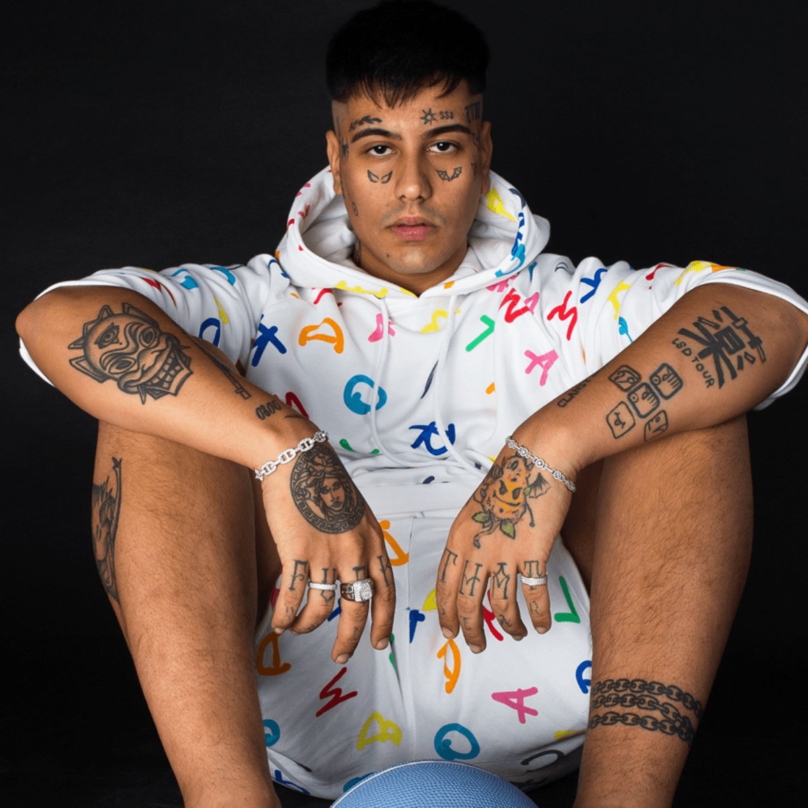

Argentina y la ecena musical
Esta es la ecena musical de argentina entre 2018 y 2021
Hoy en dia la ecena muscial de la argentina esta compuesta mayor mente con los siguientes generos
Los generos mas escuchados hoy en dia es el trap el rap o el regueton
El genero trap comenzo a sonar hace poco con la salida de artistas como duki, ysy a, cazzu, khea
El genero se expandio cuando duki se retiro de las batallas de freestyle y comenzo su carrera musical esto inspiro
a mas artistas a comenzar con su carreara musical
Hoy en dia la musica de argentina esta sonando casi por todo el mundo gracias a que este genero se populariso por todo el mundo los artistas estan sonando por muchos citios
tambien muchos artistas ahora pueden vivir de lo que aman y tener muchos lujos como autos o casas lujosas
Mauro Ezequiel Lombardo Quiroga (Almagro, Buenos Aires, 24 de junio de 1996), conocido artísticamente como Duki, es un rapero, compositor y freestyler argentino. ... Fue portada de la revista Rolling Stone de Argentina en 2018, y encabezó el festival Buenos Aires Trap por tres años consecutivos.

Mlejo Nahuel Acosta Migliarini (12 de julio de 1998, Buenos Aires, Argentina), conocido artísticamente como YSY A, es un rapero, compositor, productor discográfico y freestyler argentino, principalmente del género del trap. ... Luego de la finalización del torneo en 2017, YSY A decidió lanzar su carrera musical.